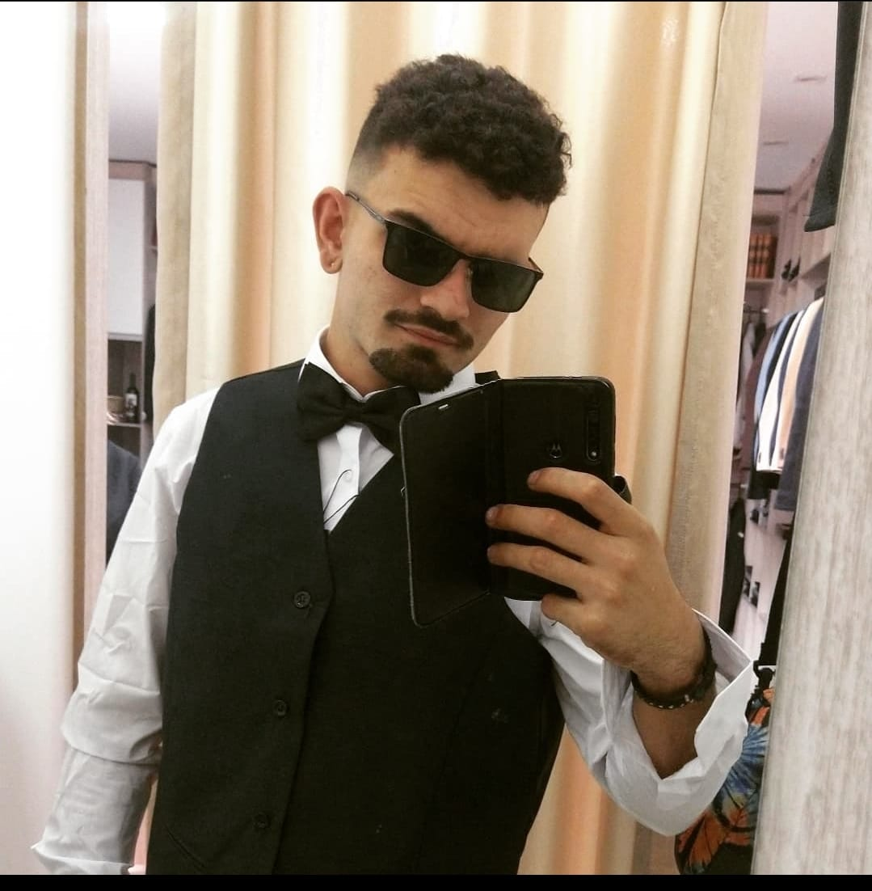

Portfólio
Daniel Joaquim Alves Ferreira
links para contato

OBJETIVO PROFISSIONAL E DESCRIÇÃO PESSOAL
Me chamo Daniel, tenho 22 anos, sou natural de Itajubá/MG e estou
atualmente estudando na Trybe e cursando faculdade de Sistemas de informação.
Me considero uma pessoa de rápido aprendizagem e com muita sede de conhecimento.
Meu perfil profissional é focado e voltado a resultados, quero contribuir de forma concisa e prática
no funcionamento pleno de minha função na empresa. Possuo disponibilidade para viagens e mudanças.
FORMAÇÕES ACADÊMICAS
- Inglês fluente/avançado
- Curso Técnico de Eletrônica, ênfase Automação Industrial - ETE "FMC" Santa Rita do Sapucaí
Concluído: 2017
- Ensino médio – Escola Estadual João Ribeiro de Carvalho – Conceição dos Ouros/MG
Concluído: 2021
- Engenharia de Software - UNINTER - incompleto
- Sistemas Digitais - UNIS - 2021 / Presente
- Curso de liderança e líder de sala ETE FMC 2 anos
- Parlamento Jovem – Câmara Municipal de Conceição dos Ouros 2 anos;
- Vice da ONG Sociedade Pró Ativista Animale.
PROJETOS E PARTICIPAÇÕES
- Projeto: S.A.R.S (Sistema Automatizado Residencial Sustentável.) - 2017
ETE “FMC” – Santa Rita do Sapucaí;
- Projeto: High-Tech Bike (Ganhador do Prêmio de Sustentabilidade) - 2016
ETE “FMC” – Santa Rita do Sapucaí;
LINKS
Instagram
Linkedin
GitHub
INDICAÇÃO DE CONTEÚDO
Código fonte
Curso Harvard CS50
Tecnologia em vídeo
StackOverFlow